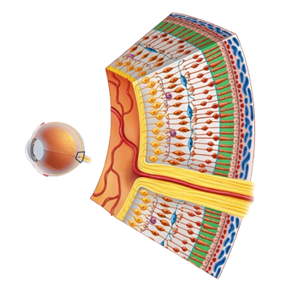

Recubriendo la retina se encuentran millones de células especiales llamadas fotorreceptores. Estas células son clave para transformar la luz que entra en los ojos en una forma que el cerebro puede utilizar para el sentido de la vista.
El ojo humano tiene dos tipos principales de fotorreceptores, bastones y conos, que reciben sus nombres por sus formas. El primer tipo, se encarga de la visión periférica y nocturna, además de la detección de movimiento. Los conos, por otra parte, son menos sensibles a la luz, y son responsables de la visión central, la percepción de detalles finos y la percepción del color.
Recordemos un poco tus clases de física en la secundaria. El color no es más que el cerebro recibiendo diferentes longitudes de onda de luz y transformándolo en “color” - pues tus ojos tienen tres tipos de conos que captan distintas longitudes de onda:
Ya que la retina tiene millones de estos fotorreceptores, la luz estimula a cada uno de ellos, así, el cerebro puede comparar las diferencias en las señales de los tres tipos de conos para determinar los colores.
Aunque la mayoría de las personas tienen solo tres tipos de fotorreceptores de cono (tricromacia), existe una rara mutación genética que solo se presenta en hembras y que provoca la aparición de cuatro subtipos de conos. Esto se denomina tetracromacia. En unos casos, este cuarto cono hace mucho más fácil la distinción de colores, pero en otros casos amplía en una muy mínima escala la banda de percepción de frecuencias a ultravioleta. Siendo que es una condición muy rara, no se sabe demasiado.
El daltonismo ocurre cuando un tipo o más de conos están ausentes, no funcionan o detectan un color diferente de lo normal. Las categorías generales que describen cuántos tipos de conos tienes y qué tan bien funcionan incluyen:
De estas categorías generales, hay otros tipos de daltonismo específicos.